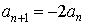
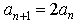
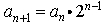
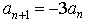
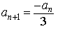

Item: tRecursiveRuleGeometric2b
Stem:
Let a1, a2, a3,
..., an, ... be a sequence
of integers. The first four terms of the sequence are given below.
-3, -6, -12, -24, . . .
Select the correct rule for finding the (n+1)th term from the nth term.
Options:





Key:
- Observable: 2.
Score: 1;
Evidence Value: 1.
-
Student:Right! Good job. Starting with the second term, each term in the sequence is equal to two times the previous term.
-
Teacher:The student was able to select the correct recursive rule for generating successive terms in a decreasing geometric sequence with negative integer terms.
- Observable: 1.
Score: 0;
Evidence Value: 0.
-
Student:Sorry, that's incorrect. Try testing the equation you selected by substituting a few numbers. Suppose n = 1. Then an = -3. So an+1 = -2 * -3 = 6. But an+1 = a2 = -6. 6 is not equal to -6, so this cannot be the correct equation.
-
Teacher:The student was not able to select the correct recursive rule for generating successive terms in a decreasing geometric sequence with negative integer terms. The student may have difficulty with multiplicative operations involving negative numbers.
- Observable: 3.
Score: 0;
Evidence Value: 0.
-
Student:Sorry, that's incorrect. Try testing the equation you selected by substituting a few numbers. Suppose n = 1. Then an = -3, and 2n-1 = 20 = 1. So an+1 = -3 * 1 = -3. But an+1 = a2 = -6. -3 is not equal to -6, so this cannot be the correct equation.
-
Teacher:The student was not able to select the correct recursive rule for generating successive terms in a decreasing geometric sequence with negative integer terms. The student may have confused the recursive rule for a geometric sequence with an explicit rule for a geometric sequence.
- Observable: 4.
Score: 0;
Evidence Value: 0.
-
Student:Sorry, that's incorrect. Try testing the equation you selected by substituting a few numbers. Suppose n = 1. Then an = -3. So an+1 = -3 * -3 = 9. But an+1 = a2 = -6. 9 is not equal to -6, so this cannot be the correct equation.
-
Teacher:The student was not able to select the correct recursive rule for generating successive terms in a decreasing geometric sequence with negative integer terms. The student may have confused the initial term with the common ratio.
- Observable: 5.
Score: 0;
Evidence Value: 0.
-
Student:Sorry, that's incorrect. Try testing the equation you selected by substituting a few numbers. Suppose n = 1. Then an = -3. So an+1 = -(-3) / 3 = 1. But an+1 = a2 = -6. 1 is not equal to -6, so this cannot be the correct equation.
-
Teacher:The student was not able to select the correct recursive rule for generating successive terms in a decreasing geometric sequence with negative integer terms.
Metadata:
Item Node: tRecursiveRuleGeometric2b,
Difficulty: 2.
Proficiencies: RecursiveRuleGeometric.